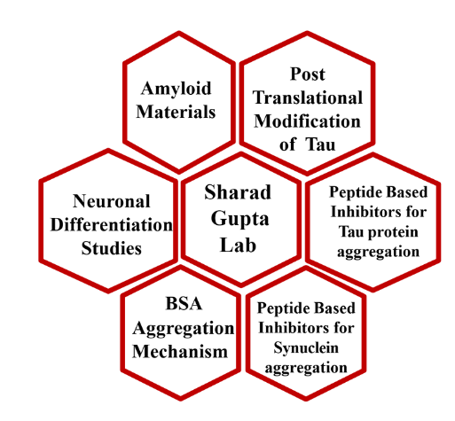
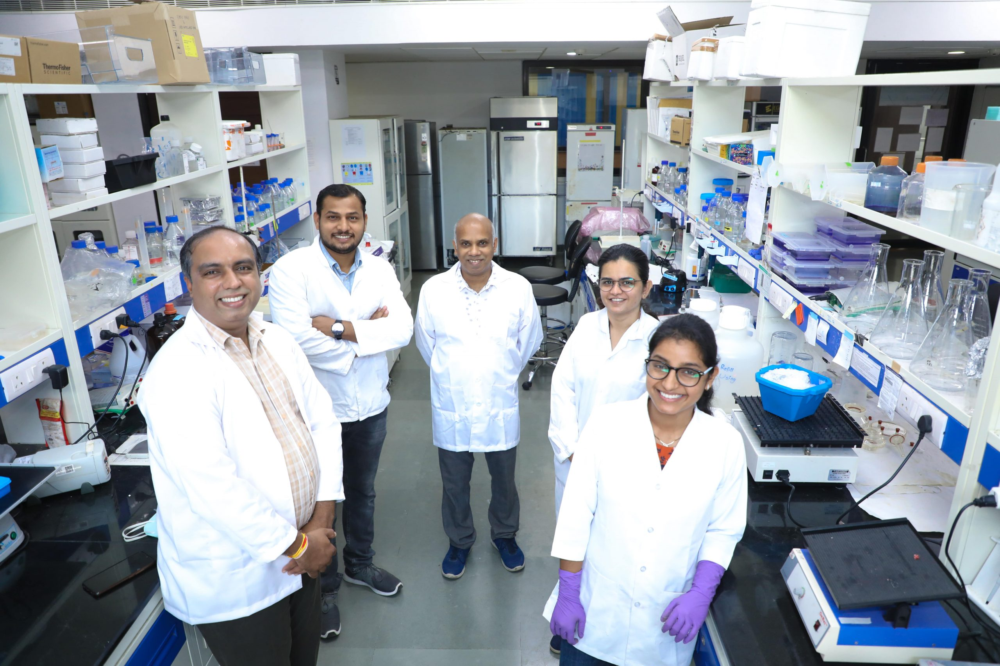
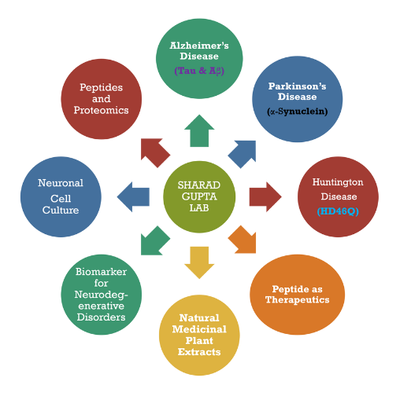

Biology of Amyloid Systems Laboratory
& Peptide Engineering and Proteomics Research
Pioneering innovative solutions for neurodegenerative diseases through interdisciplinary research approaches
About Our Laboratory
The Biology of Amyloid Systems Laboratory & Peptide Engineering and Proteomics Research (BASyL & PEPr) at IIT Gandhinagar is dedicated to understanding the fundamental mechanisms underlying protein misfolding and aggregation processes that are central to various neurodegenerative disorders, including Alzheimer's and Parkinson's diseases.
Under the leadership of Dr. Sharad Gupta, our multidisciplinary team integrates principles from molecular biology, biochemistry, biophysics, and advanced computational methods to investigate the complex nature of protein aggregation and its role in neurological disorders. We are particularly focused on understanding how post-translational modifications influence protein aggregation kinetics and developing innovative therapeutic strategies to prevent or reverse these pathological processes.
Our state-of-the-art facilities enable cutting-edge research across multiple domains, from structural analysis of amyloid fibrils to the design of novel peptide-based therapeutics that can target specific aspects of the aggregation pathway.
Research Focus Areas
Protein Aggregation Mechanisms
Investigating the molecular mechanisms driving protein misfolding and aggregation in neurodegenerative disorders, with a particular focus on tau protein in Alzheimer's disease and α-synuclein in Parkinson's disease.
Therapeutic Development
Designing and validating novel peptide-based inhibitors that can prevent or reverse pathological protein aggregation, potentially leading to new treatment strategies for neurodegenerative diseases.
Advanced Structural Analysis
Utilizing state-of-the-art biophysical techniques to characterize the structural properties of amyloid fibrils and understand how these structures contribute to cellular toxicity.
Peptide Engineering
Creating rationally designed peptides with specific functions for therapeutic and diagnostic applications, leveraging principles of protein structure and intermolecular interactions.
Proteomics Research
Analyzing protein expression profiles and post-translational modifications in neurodegenerative diseases to identify novel biomarkers and therapeutic targets.
Interdisciplinary Collaborations
Fostering collaborations with researchers across disciplines to develop integrated approaches to understanding and treating neurodegenerative disorders.
Lab Moments





